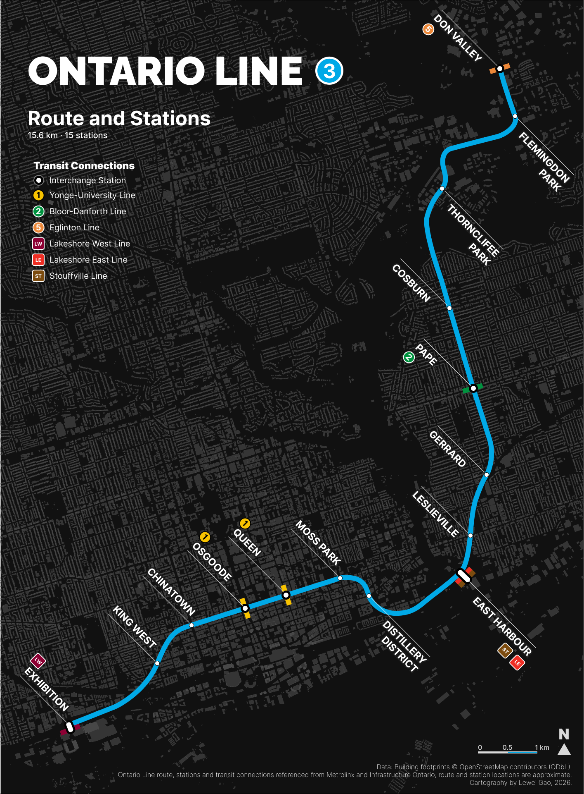
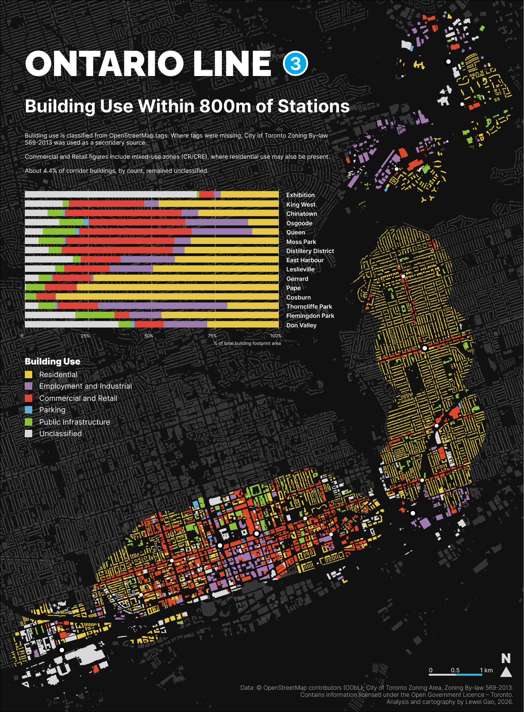
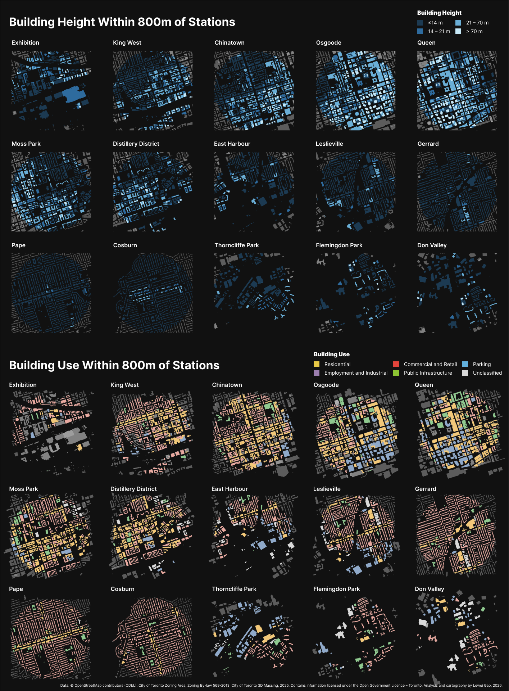

GIS · Cartography · Toronto · 2026
Ontario Line
Mapping the Built Environment Around 15 Stations
Project Overview
The Ontario Line is a 15.6 km subway under construction across Toronto, with 15 stations from Exhibition Place to Don Mills Road.
I first became curious about the corridor after coming across Ontario Line construction while walking along the Don River trail. It led to a simple question:
What already exists around these future stations?
I used an 800 m radius around each station to compare two parts of the existing built environment: building use and building height. The maps move between the full corridor and individual station areas, showing how much the urban form changes along the line.
The Corridor
The Ontario Line runs from Exhibition Place through downtown Toronto and northeast to Don Valley Station. Its 15 stations connect with TTC Lines 1, 2 and 5, streetcar and bus routes, and three GO rail lines.

Framing the Analysis
How does the existing built environment vary across Ontario Line station areas?
To make the station areas comparable, I used the same 800 m straight-line radius around each station. Several of these areas overlap, so a building can belong to more than one station area. Station-level results are calculated independently, while corridor totals are deduplicated by building ID.
Two measures are looked:
Building use is measured by each category’s share of total building footprint area.
Building height is measured by the distribution of buildings across four height ranges.
Data and Method
Building use. OpenStreetMap building polygons provide building footprints and the primary source for use classification. OSM building tags were grouped into the six categories shown in the map legend. For buildings that remained unclassified, City of Toronto Zoning By-law 569-2013 data were used as a secondary source. Zoning describes permitted use and may not match the current use of an individual building.
Building height. City of Toronto 3D Massing data provide building heights. Average height was used where available, with maximum height used when a valid average height was unavailable.
Process. I mapped the station locations, created 800 m study areas, assigned buildings to stations by geometric centre, classified building use and height, and summarized the results for each station.
For building use, each building contributes its full footprint area. Height results are calculated by building count using four ranges: ≤14 m, 14–21 m, 21–70 m and >70 m.
Building Use
Building use varies substantially along the corridor. Commercial and retail footprints are most prominent around several central stations, including Chinatown and Queen, where they account for 45.9% and 44.3% of total building footprint area.
Farther east, the pattern becomes increasingly residential. Residential buildings account for 72.9% of footprint area around Gerrard, 79.5% around Pape and 87.8% around Cosburn.
Thorncliffe Park stands out in a different way: 51.0% of its building footprint is classified as Employment/Industrial, the highest share along the corridor.

Station by Station
Viewing every station at the same scale makes the differences easier to see. Central stations contain a more mixed pattern of uses and a greater presence of taller buildings. Gerrard, Pape and Cosburn show a much stronger low-rise residential pattern. Farther northeast, Thorncliffe Park, Flemingdon Park and Don Valley introduce another set of building forms and height profiles.
Putting all 15 stations at the same scale made these differences much easier to see.

Building Height
Osgoode and Queen stand out from the rest of the corridor. Their median building heights are 28.5 m and 27.2 m, and about one in five buildings around each station is taller than 70 m.
The pattern changes sharply farther east. Around Leslieville, Gerrard, Pape and Cosburn, 94.5% to 98.4% of buildings are 14 m or lower, with no buildings above 70 m in the dataset.
The northeastern stations are more mixed. Flemingdon Park and Don Valley have relatively low median heights, 8.2 m and 10.1 m, while still containing buildings above 70 m. A small number of towers can therefore sit within an otherwise much lower building-height profile.
A Changing Planning Context
Toronto is currently updating zoning around major transit stations, while Transit-Oriented Community projects are also being advanced at several Ontario Line stations. While these initiatives look toward future development, my maps look at the built environment already in place around each station.
Looking across the corridor, the differences are substantial. The urban environments surrounding Queen and Osgoode are very different from those around Pape or Cosburn, while the stations in the northeast show yet a different built form. For me, that makes the existing conditions worth understanding before thinking about what comes next.
Data Notes
The 800 m circles are analytical study areas. They provide a consistent spatial frame across all 15 stations and do not represent the City of Toronto’s official MTSA or PMTSA boundaries. Station and route locations are approximate and were referenced from official Ontario Line information.
Building use is primarily classified from OpenStreetMap tags, with City of Toronto zoning used where OSM tags were unavailable. Zoning represents permitted use and may not reflect the current use of an individual building. Mixed-use zones also create some classification ambiguity.
A building is assigned to a station when its centroid falls within the study area, and its full footprint is counted. Building use and height come from separate datasets and are compared at the station level rather than linked building by building.
The OSM building file is dated July 2024, while the 3D Massing dataset was updated in December 2025. This project describes existing building use and height; it does not measure changes caused by transit investment, redevelopment, housing conditions or displacement.